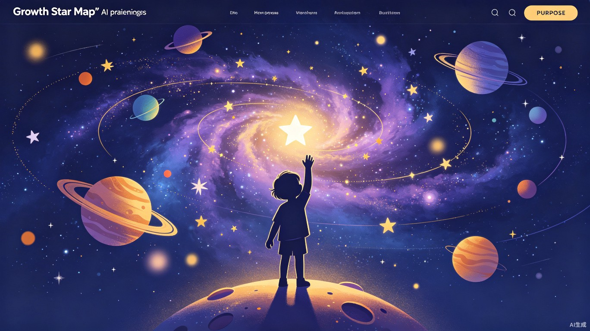
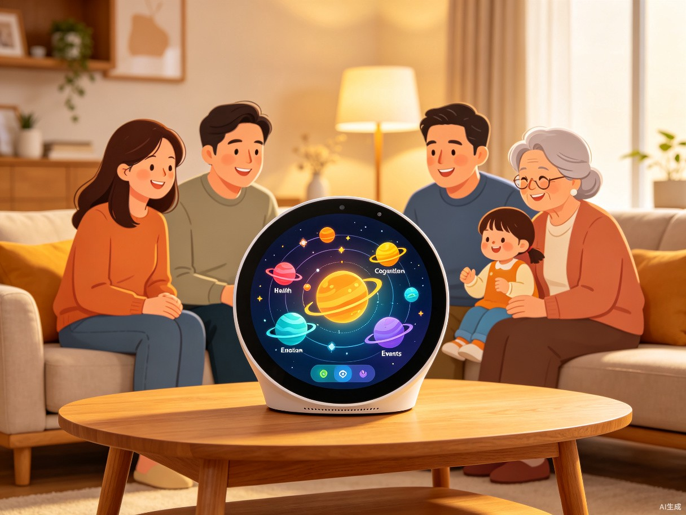
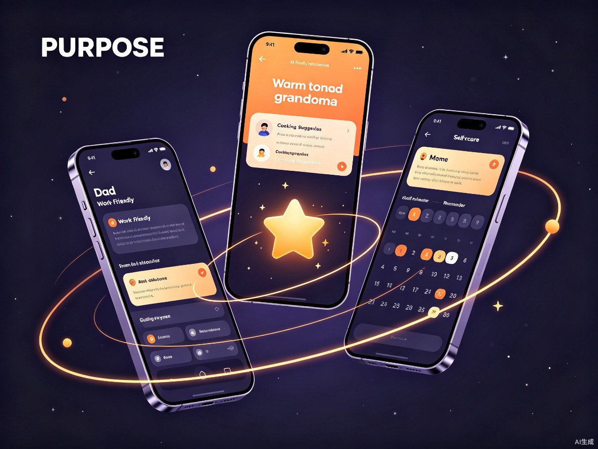
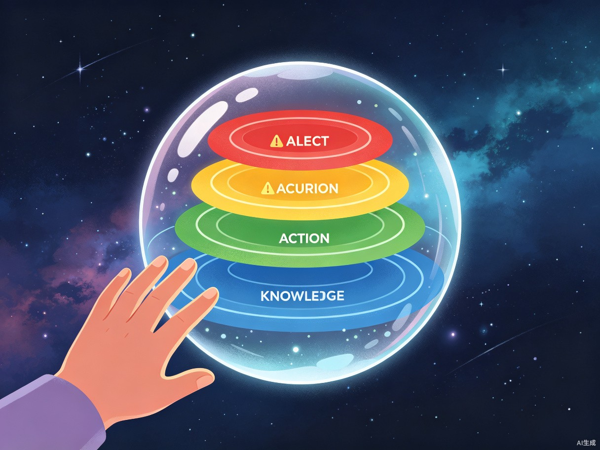
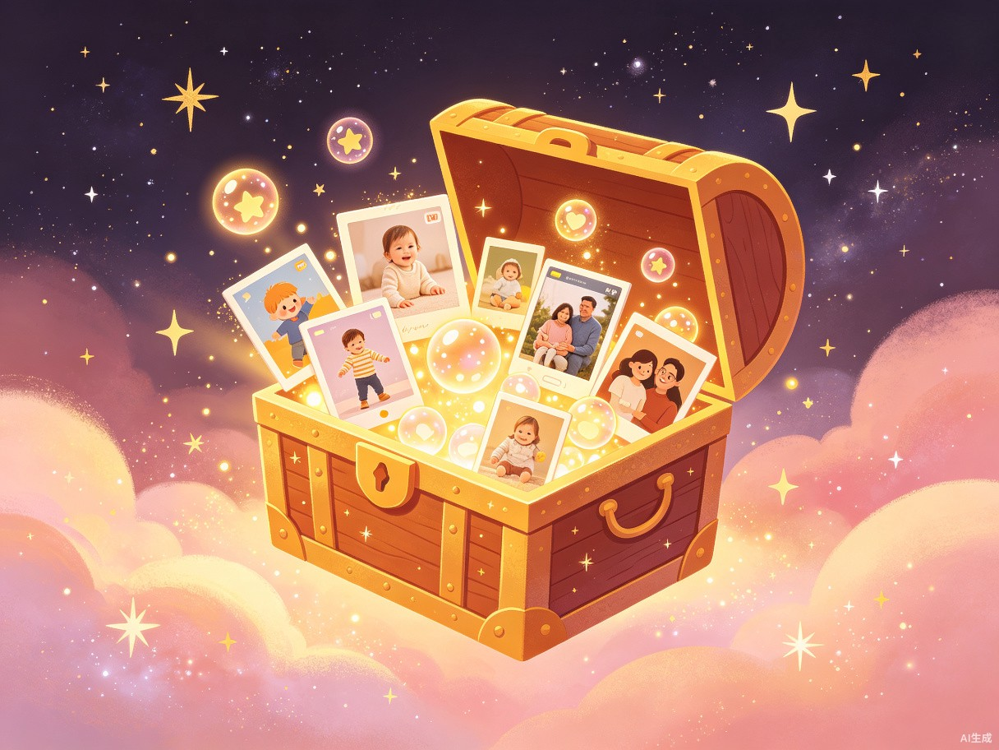

成长星图
让育儿从妈妈的孤军奋战，变成全家可见、可参与的"星系探索"
核心洞察
中国家庭育儿的最大隐性痛点不是"不会教"，而是只有一个人在扛
信息断层
妈妈记住孩子所有过敏源、疫苗时间、兴趣变化，爸爸/祖辈一问三不知
价值隐形
全职妈妈/主要照护者的付出是"看不见的家务"，没有社会化的记录和认可
成长盲区
孩子80%的成长瞬间发生在家长不在场时，这些"第一次"往往永远消失在时间里
养育分歧
隔代育儿观念冲突时，缺乏温和的"第三方数据"来取代情绪化争论
育儿是家庭最重要的"项目"，却缺少任何现代协作工具。
—— 成长星图 产品哲学产品形态
不是又一个育儿App，而是一个以家庭为单位的AI数据可视化系统
🪐 星系隐喻
把孩子的成长想象成一个"星系"，每一天都是新的星球被发现。家庭中的每个成员都是这个星系的探索者，共同绘制孩子的成长地图。
- 硬件入口：极简智能家庭终端（圆形触屏+语音），放在客厅/玄关，全家共用
- 手机端：每个家庭成员都有自己的视角，但数据共享
- AI中枢：多源数据融合，自动生成可视化叙事
- 隐私安全：家庭数据本地加密，云端仅存储脱敏特征

🪐 家庭育儿仪表盘
一张图看懂孩子今天发生了什么。打开终端或手机，呈现的不是杂乱信息流，而是一个动态星系图。
中心星系可视化
中心是孩子的头像，环绕着今日的"行星"：健康行星（大小=喝水达标率，颜色=睡眠质量）、认知行星（今日新词、读过的绘本封面漂浮）、情绪行星（情绪曲线环绕成光环）、事件行星（每个事件是一颗小流星，点击可看短视频）
AI多源融合
语音记录、可穿戴设备、家人简短打点 → 自动生成可视化叙事。看一眼就知道"今天孩子整体好不好"，不需要读文字报告。
👨👩👧 家庭角色AI调度系统
谁该做什么，AI温和提醒。理解家庭角色分工的非对称性，将育儿任务"翻译"成不同角色愿意接受的语言。
👨 爸爸视角
"小小今天第一次自己系鞋带成功！AI已将此刻标记为'里程碑'，建议你今晚回家时说一句'我听说你今天做了一件很厉害的事'，这句话会在孩子记忆中保存很久。"
👵 奶奶视角
"小小今天蔬菜吃得不够哦～冰箱里有西兰花，AI建议晚餐做蒜蓉西兰花，视频已为你准备好。"（尊重祖辈的语言习惯，不是教他们做事，而是提供"参考"）
👩 妈妈视角
"今日养育总结已自动生成。你今天的有效陪伴时长：2.3小时。孩子在你讲绘本时的专注度达到本周最高。已为你留出明早7:00-7:30的独处时间。"

🧠 育儿知识蒸馏器
把海量信息变成"现在就要的一句话"。家长最痛的不是没信息，而是信息太多、关键时刻找不到。
紧急场景：孩子半夜发烧
家长对着终端说："孩子发烧了。"AI不会推5篇科普文章，而是分层显示：
AI做了什么：检索增强生成 + 家庭数据上下文 + 角色化分发

📦 成长时间胶囊
自动挖掘被遗忘的珍宝。这个功能是情感爆发点，专门用于参赛时的故事展示。
AI自动挖掘
系统持续分析家庭数据，自动识别"第一次"时刻：第一次翻身、第一次叫妈妈、第一次自己吃饭、第一次系鞋带……这些瞬间被自动标记、生成短视频、存入时间胶囊。
情感回放
每年的同一天，AI会推送"去年的今天"——孩子第一次走路的摇晃视频，配上当时的天气、家里的温度、谁在场。这些被遗忘的细节，是家庭最珍贵的资产。
全家共享记忆
不再是妈妈手机里的几万张照片无人整理，而是全家人共同维护的、有故事线的成长纪录片。爷爷奶奶也能在终端上"点播"孩子的里程碑时刻。

技术架构
AI驱动的家庭数据可视化系统
| 技术层 | 核心能力 | 应用场景 |
|---|---|---|
| 多模态感知层 | 语音、图像、可穿戴设备数据融合 | 自动记录孩子成长事件 |
| 家庭知识图谱 | 成员关系、育儿偏好、历史数据建模 | 个性化角色化内容分发 |
| RAG知识引擎 | 检索增强生成 + 医学/教育学权威源 | 紧急情况分层信息推送 |
| 可视化叙事 | 数据→星系隐喻自动转换 | 一目了然的成长仪表盘 |
| 情感计算 | 情绪识别、里程碑检测 | 时间胶囊自动挖掘 |
| 隐私计算 | 联邦学习、本地加密、差分隐私 | 家庭数据安全保护 |
未来愿景
让每一个孩子的成长都被看见，让每一位照护者的付出都被认可
从孤岛到星系
打破育儿信息孤岛，让家庭成员成为共同探索孩子成长的"星系探险队"
从焦虑到从容
AI在关键时刻提供"刚好够用"的信息，而不是制造更多信息焦虑
从遗忘到珍藏
自动捕捉和保存成长瞬间，让每个家庭都拥有独一无二的"成长纪录片"
从工具到伙伴
AI不是冷冰冰的工具，而是理解家庭 dynamics 的温和协作者
我们不是在做一个育儿App，我们在为每个家庭建造一座属于他们的成长博物馆。
—— 成长星图 团队